Vidi un angelo dentro un blocco di marmo, prestai la mia opera per liberarlo nel cielo.
I saw an angel inside a block of marble, i let my work to release it into the sky.
IT: Michelangelo vide nelle cave bianche di Carrara una bellezza tale che rimase affascinato tutta la sua vita.
EN: Michelangelo found in Carrara white quarries a beauty that captivated him forever.
Vidi un angelo dentro un blocco di marmo, prestai la mia opera per liberarlo nel cielo.
I saw an angel inside a block of marble, i let my work to release it into the sky.

Nel Mose, Michelangelo concentra una forza trattenuta e terribile: la leggenda racconta che martello il ginocchio della statua, sembrava umana, voleva che parlasse da tanto era bella.
In the Moses, Michelangelo condenses a restrained and terrible power: legend says he struck the knee of the statue, he wanted her to speak, she was just that beautiful.

Dalla Cava Gioia di Colonnata nasce il viaggio del marmo: un blocco scelto, imbragato e affidato alla forza dei cavatori.
From the Gioia Quarry in Colonnata begins the marble journey: a chosen block, strapped and entrusted to the strength of the quarrymen.

Quel blocco, sollevato con precisione antica, raggiunge il laboratorio dove viene scolpito per le mie minisculture.
That block, lifted with ancient precision, reaches the workshop where it will take shape in my miniscultures.

Nel laboratorio, ogni miniscultura nasce da gesti lenti e precisi: il marmo prende forma tra mani che conoscono la sua resistenza e la sua essenza.
In the workshop, each minisculture is born from slow, precise gestures: the marble takes shape between hands that know its resistance and fragility.

La superficie si apre, il blocco rivela la sua anima: ogni colpo di scalpello apre a una scelta definitiva.
The surface opens, the block reveals its soul: every chisel strike is a definitive choice.

La forma emerge, piccola e intensa: una miniscultura pronta a raccontare il viaggio iniziato in cava.
The form emerges, small and intense: a minisculture ready to tell the journey that began in the quarry.
Le opere sono fotografate senza filtri, senza luci artificiali e senza ritocchi.
Solo uno strumento essenziale, capace di restituire la verità del marmo e la sua unicità materica.
Chi cerca immagini levigate, sfondi neutri o perfezioni digitali non troverà qui quel linguaggio.
Il marmo, in questo spazio, è presentato nella sua essenza più pura.
These works are photographed without filters, artificial lighting or digital retouching.
Only a simple tool, able to reveal the truth of marble and its unique material presence.
Those seeking polished images, neutral backdrops or digitally perfected objects will not find that language here.
In this space, marble is presented in its purest essence.
Rettangoli in marmo Bianco Venatino, scolpiti a mano, pensati come piccoli elementi identitari. Con i loro 9 cm di lunghezza e 2 cm di larghezza, possono essere incisi con nomi di famiglia, iniziali o il nome di un ristorante. Ideali come segnaposto o dettagli decorativi sulla tavola.
Hand‑carved rectangles in Bianco Venatino marble, conceived as small identity elements. Measuring 9 cm by 2 cm, they can be engraved with family names, initials, or restaurant branding. Perfect as place markers or refined decorative accents for table settings.
Misure: 9 × 2 cm


Portaposate in marmo Bianco Venatino, scolpito a mano con linee essenziali e proporzioni raffinate. Con i suoi 19 cm di lunghezza e 6 cm di larghezza, è pensato come elemento di eleganza per la tavola.
Hand‑carved cutlery rest in Bianco Venatino marble, defined by essential lines and refined proportions. Measuring 19 cm by 6 cm, it is conceived as an elegant element for table settings.
Misure: 19 × 6 cm


Porta incenso scolpito a mano in marmo Bianco Venatino, con scanalatura centrale per sostenere il bastoncino. Ogni pezzo è unico nelle venature e nella forma.
Hand‑carved incense holder in Bianco Venatino marble, featuring a central groove to support the incense stick. Each piece is unique in its veining and shape.
Misure: Disponibile in varie dimensioni


sottobicchieri in marmo di carrara — lavorazione artigianale, forme quadrate e tonde.
carrara marble coasters — handcrafted, available in square and round shapes.
quadrati 10×10 cm — tondi 12×12 cm
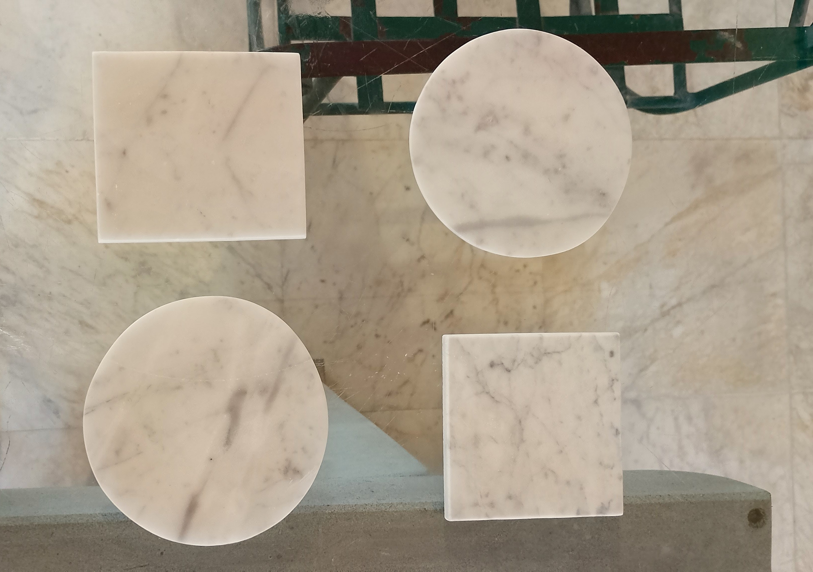
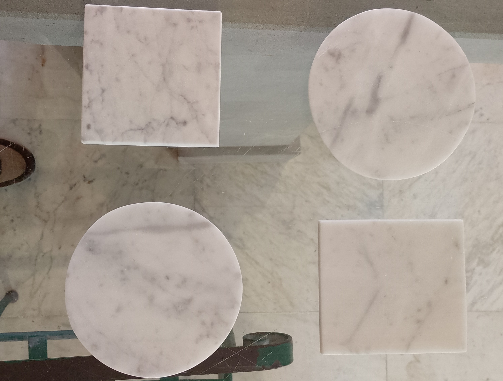
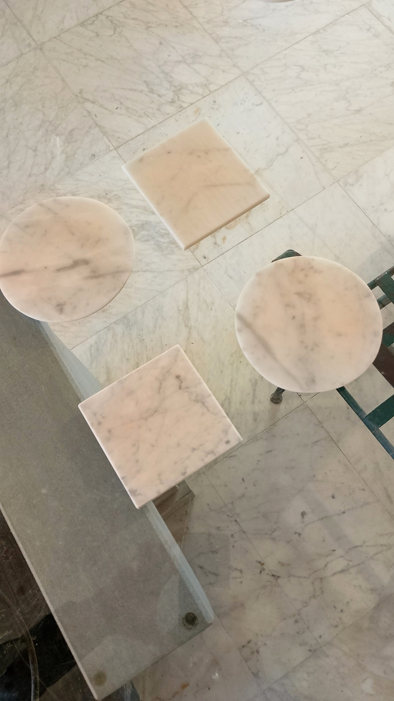
mortai in marmo venatino di carrara, scolpiti a mano, disponibili in varie misure. pestello a scelta: in marmo oppure in legno.
hand‑carved carrara venatino marble mortars, available in multiple sizes. pestle available in marble or wood.
misure: varie dimensioni disponibili su richiesta
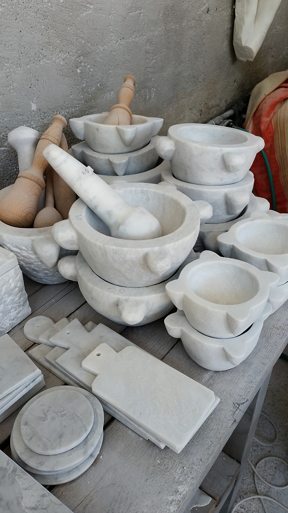
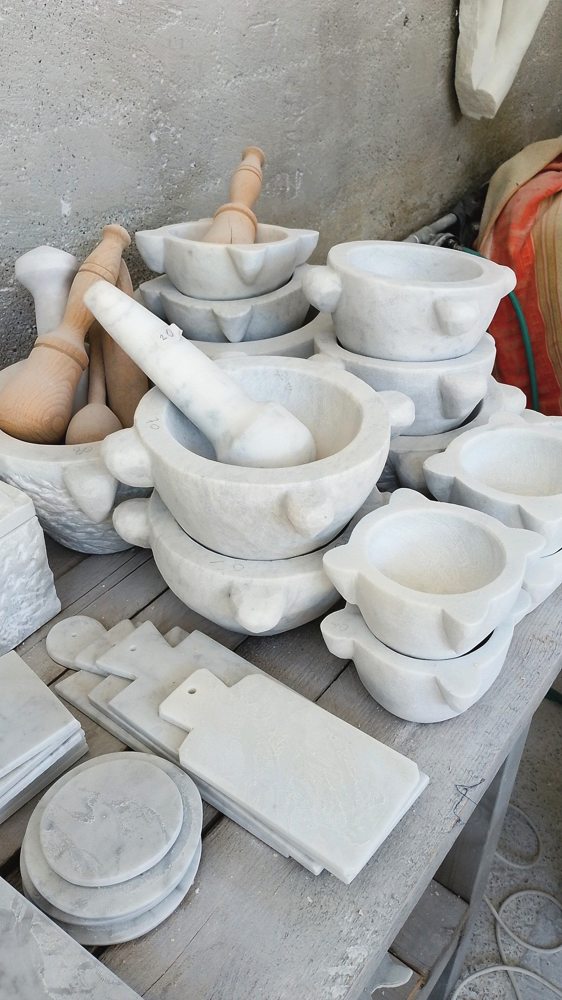
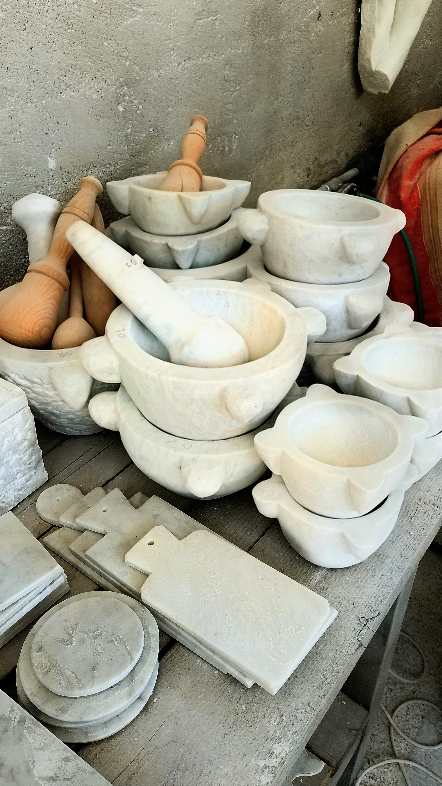
anelli in marmo di carrara — pezzi unici scolpiti a mano, disponibili in forme tonde e quadrate.
carrara marble rings — unique hand‑carved pieces, available in round and square shapes.
misure: varie dimensioni disponibili su richiesta

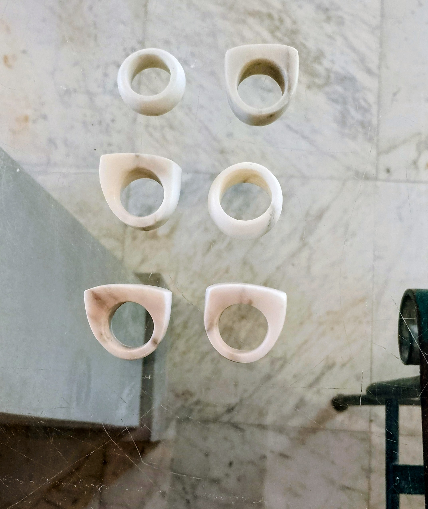
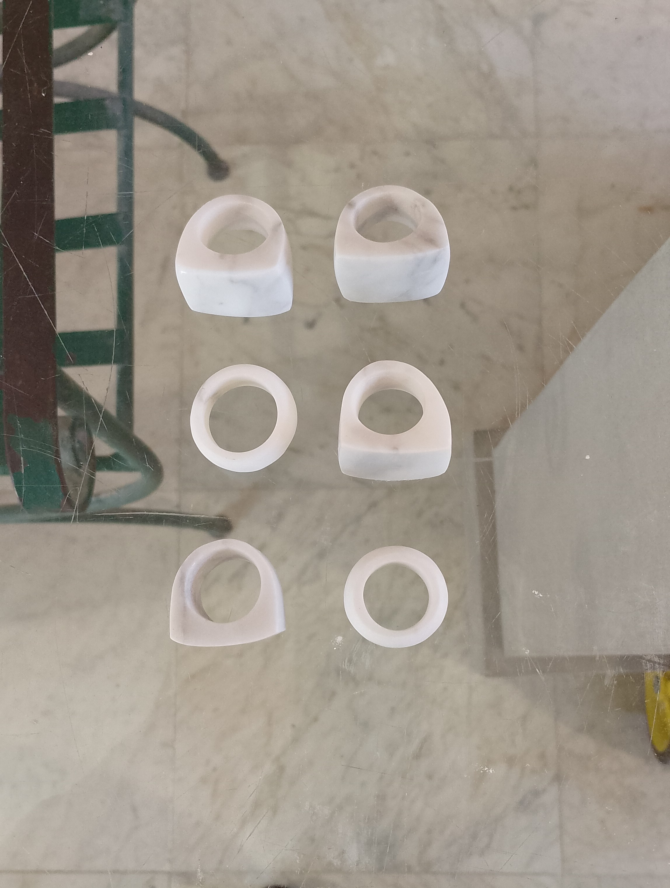
tagliere in marmo venatino gioia — pezzo unico scolpito a mano, ideale sia come piano di lavoro sia come elemento da esposizione. la venatura del gioia esalta la forma e la superficie.
gioia venatino marble cutting board — unique hand‑carved piece, suitable both for kitchen use and as a display element. the natural veining enhances its presence.
misure: 60 × 43 cm
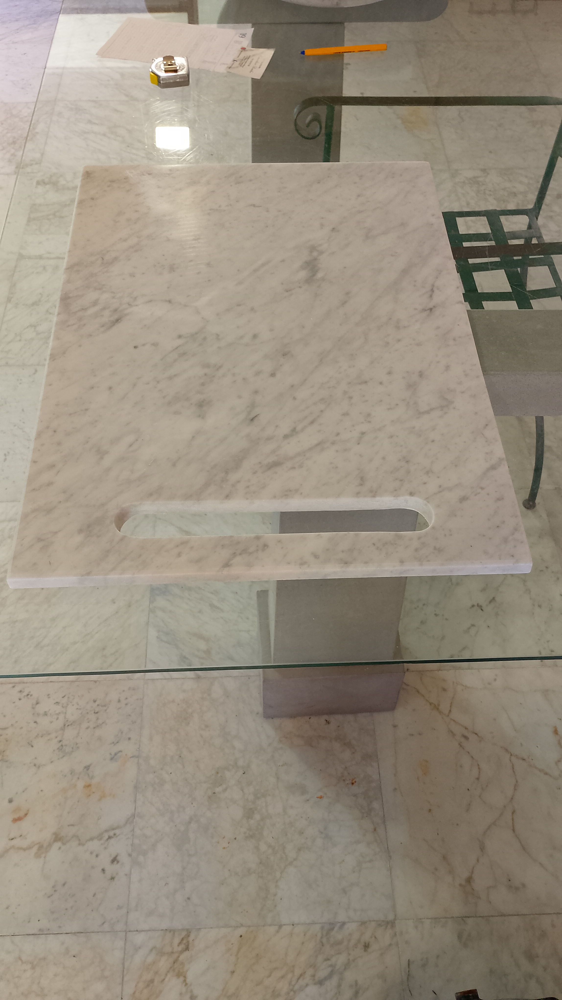
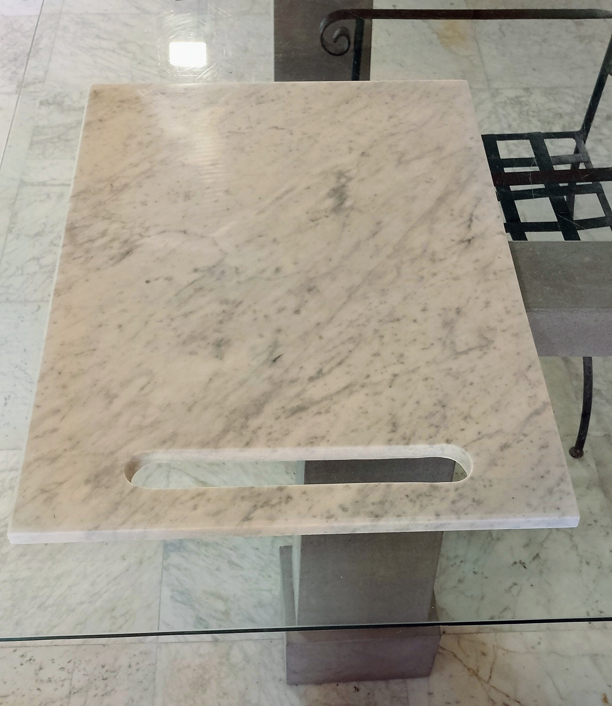
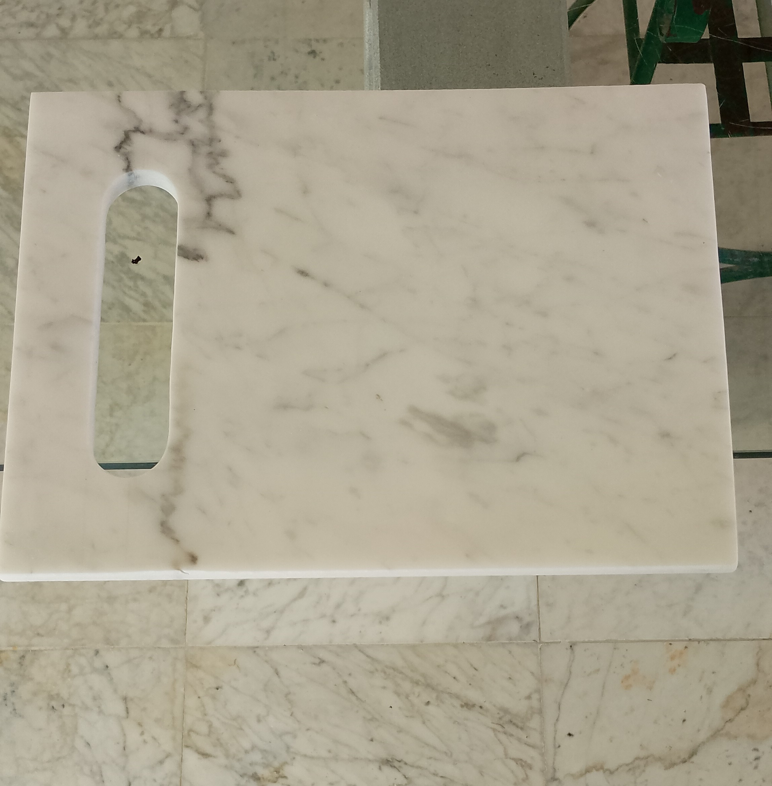